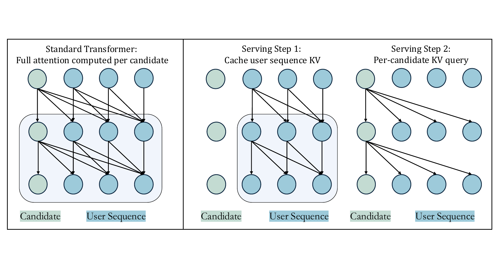
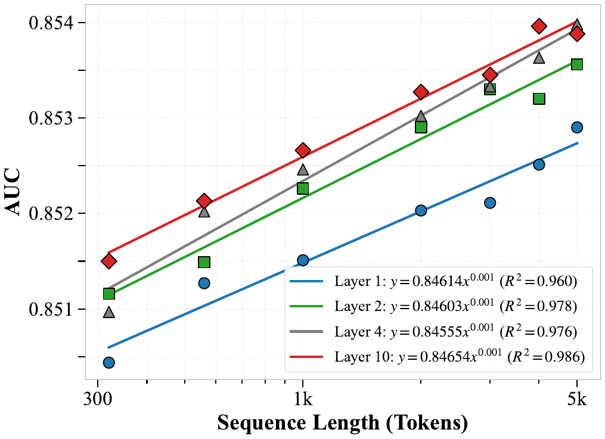
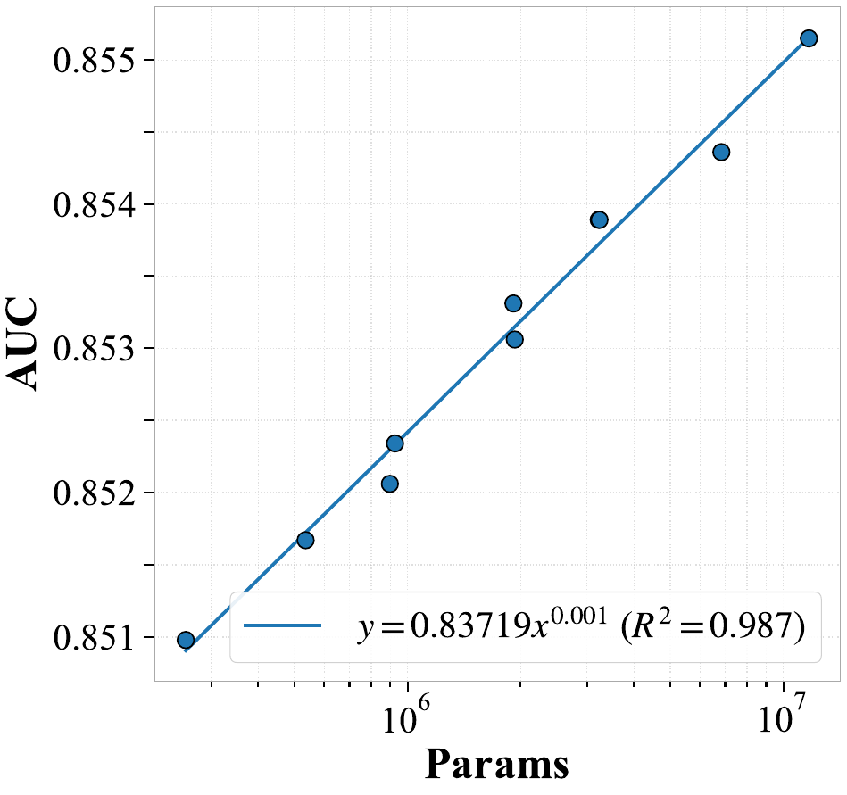
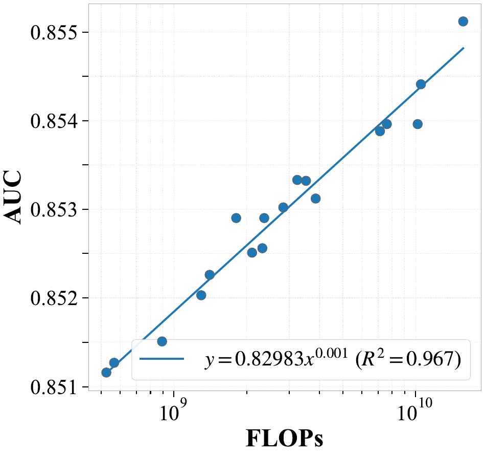

Motivation
- Recommender systems rely on user behavior history (clicks, purchases) to predict what to show next.
- Longer histories contain more useful information.
- But most industrial systems cannot use the full sequence—too slow and expensive.
- Two-stage methods (select subset first) lose information.
- Key question: How can we model ultra-long sequences end-to-end efficiently?
Core Idea
Challenge: Standard Transformers are too expensive for very long sequences.
Three key ideas:
- 1. Global tokens — summarize the sequence, capture long-range dependencies.
- 2. Token merging — reduce tokens, lower computation cost.
- 3. Hybrid attention — balance efficiency and modeling capability.
Together: Efficient modeling of sequences up to 10k items.

Methodology
Training: JAGUAR framework (mixed precision). Inference: KV cache for efficient serving.


Scaling
Performance scales with length, params, FLOPs (R² ≈ 0.97–0.99).




Results
LONGER improves both accuracy and efficiency.
- Offline: +1.57% AUC vs base; +0.21% vs Transformer.
- Online: Douyin Ads +1–2%; E-Commerce +4–8%.
- Efficiency: ~50% FLOPs cut.
Offline AUC Comparison
| Model | ΔAUC vs Base |
|---|---|
| Transformer | +1.36% |
| LONGER | +1.57% |
Significance
- Practical path to end-to-end ultra-long sequence modeling under industrial constraints.
- Scaling laws validated in recommendation (length, FLOPs, params).
- Deployed at ByteDance across advertising and e-commerce; billions of users.
Impact on This Research
- Adopt global tokens for stabilizing attention in long contexts.
- Use token merge + InnerTrans for efficiency.
- Explore hybrid attention (cross + self) and KV cache for inference.
- Apply mixed precision and recomputation for memory.
Writing Strategies I Learned
- Clear problem and three contributions — Intro states why ultra-long sequences matter, why two-stage is limiting, and three separated contributions with their own sections.
- Results tied to design — Each claim backed by a table or figure (offline, ablation, scaling, online A/B).
- Industrial validation — Online A/B across formats; deployment at scale stated explicitly.
Summary
LONGER enables end-to-end 10k-sequence modeling with ~50% FLOPs cut; scaling laws validated; deployed at ByteDance, billions of users.
Thank you
Questions?